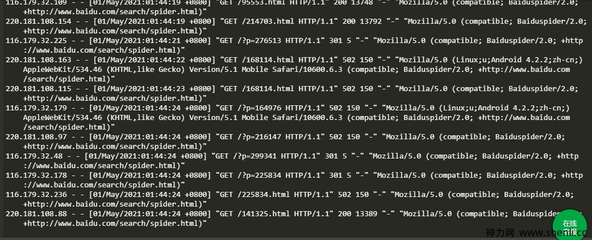

爬虫
这个截图是百度的爬虫爬取网站的记录。

如何做一个最简单的爬虫？ 一条bash命令爬深圳7天天气
#获取7天的天气
wget -q http://www.weather.com.cn/weather/101280601.shtml -O - \
| grep 'class="wea"\|^<h1>' | grep -o ">.*<" | sed 's/>//;s/<//' \
| awk 'ORS=NR%2==1?" ":"\n" {print}'
7日（今天） 晴
8日（明天） 晴
9日（后天） 晴
10日（周五） 晴
11日（周六） 晴
12日（周日） 晴
13日（周一） 晴转小雨
这条命令如何写出来的
- 定目标，想好要爬什么，如爬深圳天气
- 先在浏览器访问天气网站，网址http://www.weather.com.cn/， 再找到深圳7天天气的网页链接为http://www.weather.com.cn/weather/101280601.shtml
- 右键菜单里选择查看网页源码，搜索天气的内容所在位置
- 找规律： 日期和天气的行有特定起始内容，日期这行以
<h1>开头，天气这行包含class="wea" - 格式化： 清除不要的内容，使用sed和awk
拓展
只有这样没有意义， 不如自己在浏览器上看？ 但如果一次性查找武汉、北京、广州的天气，但网页只能查当天的，只有保存到硬盘的数据才能永远回头翻
或者如果想每天自动执行一遍呢？ 又或者如何自动发邮件提醒你带伞呢？ --都是可以的， 这需要更多耐心和学习
但因为bash处理网页比较麻烦，而且也不是今天的主题语言。
关键组件
- python
- scapy
- Beautiful Soup
python
python简单灵活的语法又有丰富的生态， 适合作为入门爬虫的编程语言
Beautiful Soup
早期使用python自带的request库， 就能简单地实现一个爬虫软件
主角scrapy
An open source and collaborative framework for extracting the data you need from websites. In a fast, simple, yet extensible way.
scrapy 是一套完整框架， 实现了爬取网站的许多细节工作，让我们不需要了解代码，就能爬网站。其开发商还提供爬虫托管服务， 可以将你的爬虫做成在线服务， 而bs只是一个库
简单介绍 * 目录结构 * 配置
scrapy选择器
选择器用来指定网页的位置，scrapy支持的选择器有两种： * css * xpath
自己先在源码上找规律，也可以简单地使用浏览器提供的复制选择器功能
先手动验证, 获取列表的所有详情页链接
scrapy shell "https://www.douban.com/group/search?cat=1013&q=深圳租房"
# xpath方式
response.xpath('//td[has-class("td-subject")]//a/@href').getall()
# css方式
response.css('td.td-subject').css('a::attr(href)').getall()
先手动验证, 获得下一页
response.css('span.next').css('a::attr(href)').get()
# 控制台->‘Copy CSS Selector’
# .next > a:nth-child(2)
response.css('.next > a::attr(href)').get()
数据处理
爬到的数据可能乱和重复， 可以加个清洗的步骤， 在爬到数据后对数据过滤，删除不要的数据
# 删除重复条目
class DuplicatesPipeline(object):
def __init__(self):
self.ids_seen = set()
def process_item(self, item, spider):
if item['title_digist'] in self.ids_seen:
raise DropItem("Duplicate item found: %s" % item)
else:
self.ids_seen.add(item['title_digist'])
return item
具体项目 爬豆瓣租房
使用爬虫清理百度搜索结果
百度搜索的有效结果只占少部分，其他是广告，视频和推荐词
用爬虫来提取有效结果
# 标题
response.css('#content_left > div.result').css('a:nth-child(1)::text').getall()
# 结果
response.css('#content_left > div.result').css('a:nth-child(1)::attr(href)').get()
部署成在线服务
pip install shub
shub login
Insert your Zyte Scrapy Cloud API Key: <API_KEY>
# Deploy the spider to Zyte Scrapy Cloud
shub deploy
# Schedule the spider for execution
shub schedule blogspider
Spider blogspider scheduled, watch it running here:
https://app.zyte.com/p/26731/job/1/8
# Retrieve the scraped data
shub items 26731/1/8
其他问题
登录
不是所有页面都能像豆瓣这样简单直接访问，有的需要登陆，这时需要设置cookie
可将浏览器的访问的请求复制为curl请求，再将curl请求转换为scrapy请求, 有工具curl2scrapy
爬携程机票，但这样只能看最新或者最便宜的机票，无法自动订票
curl 'https://flights.ctrip.com/international/search/api/lowprice/calendar/getCalendarDetailList?v=0.4625948281116462' -H 'User-Agent: Mozilla/5.0 (X11; Linux x86_64; rv:78.0) Gecko/20100101 Firefox/78.0' -H 'Accept: application/json' -H 'Accept-Language: zh-CN,en-US;q=0.5' --compressed -H 'Content-Type: application/json;charset=utf-8' -H 'transactionID: 0feb04e3db5648acb409a9efaf68eb99' -H 'scope: d' -H 'Cache-Control: no-cache' -H 'Origin: https://flights.ctrip.com' -H 'Connection: keep-alive' -H 'Referer: https://flights.ctrip.com/online/list/oneway-wuh0-szx?_=1&depdate=2021-12-08&cabin=y_s&adult=1&searchid=j1043107111-1628648957090-97788Tk-0&containstax=1' -H 'Cookie: _bfa=1.1638949895953.3tfx42.1.1638949895953.1638949895953.1.2; _bfs=1.2; FlightIntl=Search=[%22WUH|%E6%AD%A6%E6%B1%89(%E5%A4%A9%E6%B2%B3%E5%9B%BD%E9%99%85%E6%9C%BA%E5%9C%BA)(WUH)|477|WUH|WUH|480%22%2C%22SZX|%E6%B7%B1%E5%9C%B3(SZX)|30|SZX|480%22%2C%222021-12-09%22]; _RF1=116.30.223.163; _RSG=mtaCn0GabiBpwk2uaRD22A; _RDG=28d46524d5c5f727d530fed50e21ed2094; _RGUID=bb259100-3132-4df0-a082-35b9380aeeb3; _bfaStatus=send; MKT_Pagesource=PC; _bfaStatusPVSend=1; _bfi=p1%3D10320673302%26p2%3D10320673302%26v1%3D2%26v2%3D1' -H 'Sec-GPC: 1' -H 'TE: Trailers' --data-raw '{"cabin":"Y_S","flightWay":"S","flightSegmentList":[{"arrivalCityCode":"SZX","departureCityCode":"WUH","departureDate":"2021-12-08"}]}'
代理ip
爬取的时候莫名其妙 IP 就被网站封掉了，毕竟各大网站也不想自己的数据被轻易地爬走。 对于爬虫来说，为了解决封禁 IP 的问题，一个有效的方式就是使用代理，使用代理之后可以让爬虫伪装自己的真实 IP，如果使用大量的随机的代理进行爬取，那么网站就不知道是我们的爬虫一直在爬取了，这样就有效地解决了反爬的问题。
模拟用户代理useragent
User Agent中文名为用户代理，简称 UA，它是一个特殊字符串头，使得服务器能够识别客户使用的操作系统及版本、CPU 类型、浏览器及版本、浏览器渲染引擎、浏览器语言、浏览器插件等。
可以使用自己浏览器的UA，也可以用百度蜘蛛的UA列表
但目标网站是否允许就难说了， 需要多试一试
模拟浏览器
Selenium 是一个用于Web应用程序测试的工具。Selenium测试直接运行在浏览器中，就像真正的用户在操作一样。
cd ～/github/SeleniumLogin
python SeleniumLogin/core/taobao.py
def login(self, username, password, chromedriverpath, **kwargs):
# 基本设置
browser = webdriver.Chrome(options=self.chrome_opts)
browser.get(self.login_url)
driver_wait = WebDriverWait(browser, 60)
# 点击'亲, 请登录', 进入登录界面
button = driver_wait.until(EC.presence_of_element_located((By.CLASS_NAME, 'h')))
button.click()
# 输入用户名密码
username_sender = driver_wait.until(EC.presence_of_element_located((By.ID, 'fm-login-id')))
username_sender.send_keys(username)
password_sender = driver_wait.until(EC.presence_of_element_located((By.ID, 'fm-login-password')))
password_sender.send_keys(password)
time.sleep(2)
# 检查是否出现了滑动验证码
try:
slider = browser.find_element_by_xpath("//span[contains(@class, 'btn_slide')]")
if slider.is_displayed():
ActionChains(browser).click_and_hold(on_element=slider).perform()
ActionChains(browser).move_by_offset(xoffset=258, yoffset=0).perform()
ActionChains(browser).pause(0.5).release().perform()
except:
pass
# 点击登录按钮
#button = driver_wait.until(EC.presence_of_element_located((By.CLASS_NAME, 'password-login')))
#button.click()
# 返回必要的数据
infos_return = {'username': username}
return infos_return, browser
headless
引用
http://c.biancheng.net/view/2011.html https://github.com/CharlesPikachu/SeleniumLogin